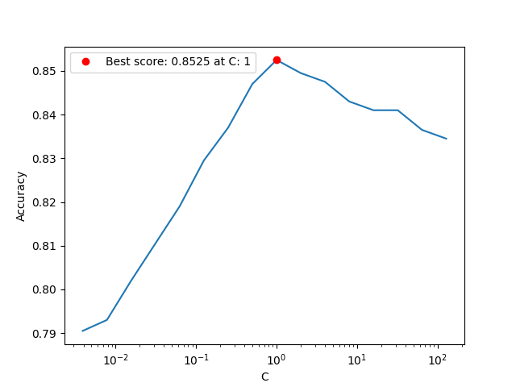
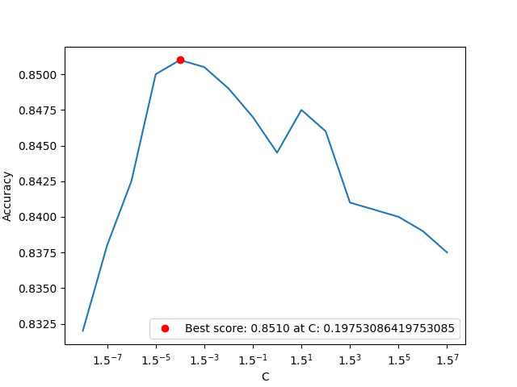
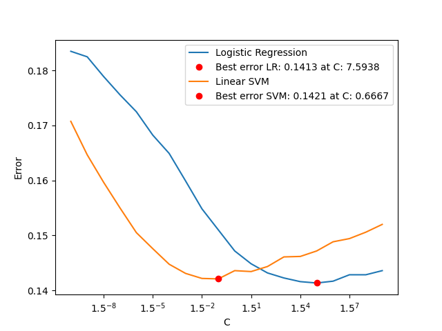

SENG 474: Assignment 2 Report
Nathan Woloshyn
Part 1: Loading the Data
In order to use sci-kit learn’s implementations of logistic regression and support vector machines, we must load the data into a digestible form. For this, we use a pandas data frame. Note: if you are trying to run my code, make sure that the fashionmnist repo is in the folder above the folder containing the code.
def read_data():
X_train, y_train = mnist_reader.load_mnist('../fashionmnist/data/fashion', kind='train')
X_test, y_test = mnist_reader.load_mnist('../fashionmnist/data/fashion', kind='t10k')
#rescale the pixels to be between 0 and 1
X_train = X_train / 255
X_test = X_test / 255
#normalize feature vectors to have euclidean norm 1
X_train = X_train / np.linalg.norm(X_train, axis=1).reshape(-1, 1)
X_test = X_test / np.linalg.norm(X_test, axis=1).reshape(-1, 1)
train_df = pd.DataFrame(np.concatenate((X_train, y_train.reshape(-1, 1)), axis=1))
test_df = pd.DataFrame(np.concatenate((X_test, y_test.reshape(-1, 1)), axis=1))
#print(train_df.shape)
# print(test_df.shape)
#print(train_df.head())
return train_df, test_df
train_df, test_df = read_data()
'''For this assignment we're only concerned with classes 0 and 6, so we'll drop the rest of the data.'''
def filter_data(df):
df = df[df[784].isin([0, 6])]
#print(df.shape)
for index, row in df.iterrows():
if row[784] == 6:
row[784] = 1
shuffled_df = df.sample(frac=1)
return shuffled_df
The read_data function grabs all the information from the fashionmnist data set and puts it into a pandas data frame. The filter_data function takes a data frame and filters it to only contain the classes we are interested in. In this case, we are only interested in classes 0 and 6, so we drop all the other classes. We also shuffle the data frame so that the data is not ordered by class.
Part 2: Logistic Regression
We use sci-kit learn’s implementation of logistic regression to classify the data. We vary the regularization parameter C, according to a logarithmic scale, and plot the accuracy of the model on the training and test data.
def plot_accuracy_vs_C(X_train, y_train, X_test, y_test, C_values):
'''A function to plot the accuracy of the model as a function of C.'''
accuracies = []
best_accuracy = 0
best_C = 0
for C in C_values:
model = lm.LogisticRegression(C=C, multi_class="multinomial", solver="lbfgs", penalty="l2", max_iter=1000)
model.fit(X_train, y_train)
accuracies.append(model.score(X_test, y_test))
if model.score(X_test, y_test) > best_accuracy:
best_accuracy = model.score(X_test, y_test)
best_C = C
plt.plot(C_values, accuracies)
plt.plot(best_C, best_accuracy, 'ro', label='Best score: '
+ "{:.4f}".format(best_accuracy) + ' at C: ' + str(best_C))
plt.xlabel("C")
plt.xscale("log", base=2)
plt.ylabel("Accuracy")
plt.legend(loc="best")
plt.savefig("logistic_accuracy_vs_C.png")
C_values = [2**i for i in range(-8, 8)]
plot_accuracy_vs_C(X_train, y_train, X_test, y_test, C_values)Running the above code produces the following plot:

We can see that the best accuracy is achieved at C = 1, and the accuracy is 0.8525.
Part 3: Linear SVM
We use sci-kit learn’s implementation of linear SVM to classify the data. We vary the regularization parameter C, according to a logarithmic scale, and plot the accuracy of the model on the training and test data. After a few experiments with different bases for the logarithmic scale, I found that base 1.5 was able to give the best performance.
def plot_accuracy_vs_C(X_train, y_train, X_test, y_test, C_values):
accuracies = []
best_accuracy = 0
best_C = 0
for C in C_values:
model = svm.LinearSVC(C=C, max_iter=10000)
model.fit(X_train, y_train)
accuracies.append(model.score(X_test, y_test))
if model.score(X_test, y_test) > best_accuracy:
best_accuracy = model.score(X_test, y_test)
best_C = C
plt.plot(C_values, accuracies)
plt.plot(best_C, best_accuracy, 'ro', label='Best score: '
+ "{:.4f}".format(best_accuracy) + ' at C: ' + str(best_C))
plt.xlabel("C")
plt.xscale("log", base=1.5)
plt.ylabel("Accuracy")
plt.legend(loc="best")
plt.savefig("lin_svm_accuracy_vs_C.png")
C_values = [1.5**i for i in range(-8, 8)]
plot_accuracy_vs_C(X_train, y_train, X_test, y_test, C_values)Running the above code produces the following plot:

Our best accuracy is achieved at \(C \approx 0.2\), and the accuracy is 0.8510. Slightly worse than the logistic regression model, but very close.
Part 4: K Fold Cross Validation
We implement K fold cross validation from scratch, and use it to find the best regularization value \(C\) for both the logistic regression and linear SVM models. We use a logarithmic scale for \(C\), with base 1.5. We use 5 folds for the cross validation.
First, we partition the data into 5 folds. Then we write a function to train the model on each possible selection of validation fold, and return the average accuracy of the model on the validation folds. Then we write a function to find the best \(C\) value by iterating over a range of \(C\) values, and finding the \(C\) value that gives the best average accuracy.
def k_fold_separation(test_data, k=5):
'''This function takes in a dataframe and returns a list of dataframes, each of which is a fold of the original dataframe.'''
test_data_length = len(test_data)
fold_length = test_data_length // k
folds = []
for i in range(k):
folds.append(test_data.iloc[i*fold_length:(i+1)*fold_length])
return folds
def k_fold_cross_validation(folds, model):
'''this function takes in the folds and a SKL model, fits the model on each possible combination of folds and returns the average score of the k folds'''
scores = []
for i in range(len(folds)):
validation_set = folds[i]
training_set = pd.concat(folds[:i] + folds[i+1:])
model.fit(training_set.iloc[:, :-1], training_set.iloc[:, -1])
scores.append(model.score(validation_set.iloc[:, :-1], validation_set.iloc[:, -1]))
return np.mean(scores)
def plot_error_logistic_regression_varying_c(c_values):
'''This function creates an SKL logistic regression model and plots the error for varying values of the regularization parameter C'''
folds = k_fold_separation(train_df)
errors = []
best_error = 1
best_c = 1
for c in c_values:
lr = lm.LogisticRegression(C=c)
errors.append(1 - k_fold_cross_validation(folds, lr))
if 1 - k_fold_cross_validation(folds, lr) < best_error:
best_error = 1 - k_fold_cross_validation(folds, lr)
best_c = c
plt.plot(c_values, errors, label='Logistic Regression')
plt.xscale("log", base=1.5)
plt.xlabel("C")
plt.ylabel("Error")
plt.plot(best_c, best_error, 'ro', label='Best error LR: '
+ "{:.4f}".format(best_error) + ' at C: ' + "{:.4f}".format(best_c))
def plot_error_linear_svm_varying_c(c_values):
'''This function creates an SKL linear SVM model and plots the error for varying values of the regularization parameter C'''
folds = k_fold_separation(train_df)
errors = []
best_error = 1
best_c = 1
for c in c_values:
linsvm = svm.LinearSVC(C=c)
errors.append(1 - k_fold_cross_validation(folds, linsvm))
if 1 - k_fold_cross_validation(folds, linsvm) < best_error:
best_error = 1 - k_fold_cross_validation(folds, linsvm)
best_c = c
plt.plot(c_values, errors, label='Linear SVM')
plt.plot(best_c, best_error, 'ro', label='Best error SVM: '
+ "{:.4f}".format(best_error) + ' at C: ' + "{:.4f}".format(best_c))
plt.legend(loc='best')
plt.savefig("kfcv_linear_svm_error_vs_C.png")Running all of the above code produces the following plot:

According to this, the optimal value of \(C\) for the logistic regression model is \(C \approx 7.5\), and the optimal value of \(C\) for the linear SVM model is \(C \approx 0.67\). So now we can finally train our models on the entire training set, and evaluate them on the test set, using these optimal values of \(C\).
train_df, test_df = read_data()
train_df = filter_data(train_df)
test_df = filter_data(test_df)
X_train = train_df.iloc[:, :-1]
y_train = train_df.iloc[:, -1]
X_test = test_df.iloc[:, :-1]
y_test = test_df.iloc[:, -1]
linsvm = svm.LinearSVC(C=0.6667)
logreg = lm.LogisticRegression(C=7.5938)
linsvm.fit(X_train, y_train)
logreg.fit(X_train, y_train)
print("Linear SVM accuracy: ", linsvm.score(X_test, y_test))
print("Logistic Regression accuracy: ", logreg.score(X_test, y_test))Which produces the following output:
Linear SVM accuracy: 0.847
Logistic Regression accuracy: 0.8475This shows that when optimally parameterized, the linear SVM and logistic regression models perform very similarly on the test set. The logistic regression model is slightly better, with an accuracy of 0.8475, compared to 0.847 for the linear SVM model, but this could easily be noise.